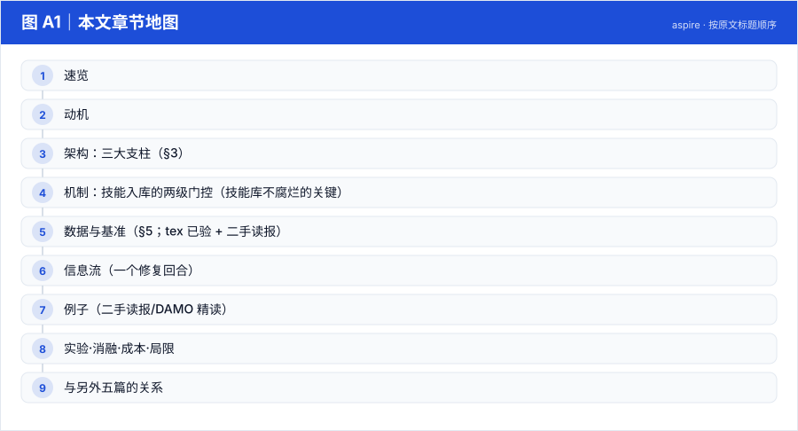
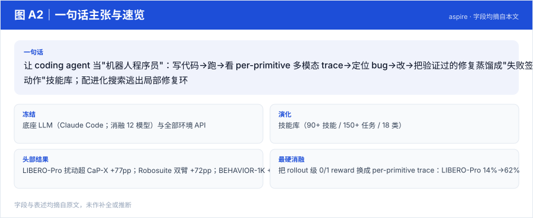
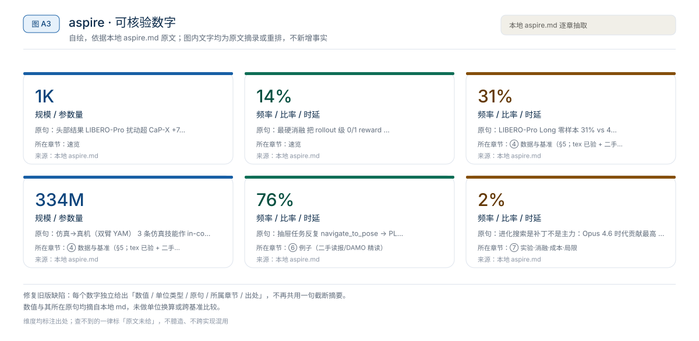
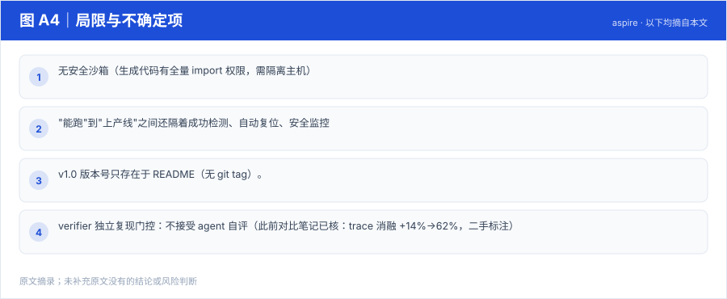

【Harness VLA · 代码即策略与技能发现】RAX 深读：把在线探索做成 Scaling Law，五大基准平均领先 37.4 个点
冻结通用 coding agent 直接连机器人感知/控制接口，把"在线探索"做成 scaling law：成功决策编译成程序、版本化入库，能力随探索预算单调增长
Harness01-代码即策略与技能发现2026
让 coding agent 当"机器人程序员"：写代码→跑→看 per-primitive 多模态 trace→定位 bug→改→把验证过的修复蒸馏成"失败签名→修复动作"技能库；配进化搜索逃出局部修复环
原题与资源：ASPIRE: Agentic Skill Programming through Iterative Robot Exploration (Agentic /Skills Discovery for Robotics) · arXiv:2607.00272 · 代码
一句话：让 coding agent 当"机器人程序员"：写代码→跑→看 per-primitive 多模态 trace→定位 bug→改→把验证过的修复蒸馏成"失败签名→修复动作"技能库；配进化搜索逃出局部修复环
阅读成本：正文约 3212 字 / 9 个章节 / 4 张图；目录按本文原有章节顺序排列，章节内容未改动。
目录（点击跳到对应章节）：

图 A1：本文章节地图（节点即原文 h2 标题）。自绘，依据本文，不新增事实。
| 项 | 内容 |
|---|---|
| 一句话 | 让 coding agent 当"机器人程序员"：写代码→跑→看 per-primitive 多模态 trace→定位 bug→改→把验证过的修复蒸馏成"失败签名→修复动作"技能库；配进化搜索逃出局部修复环 |
| 冻结 | 底座 LLM（Claude Code；消融 12 模型）与全部环境 API |
| 演化 | 技能库（90+ 技能 / 150+ 任务 / 18 类） |
| 头部结果 | LIBERO-Pro 扰动超 CaP-X +77pp；Robosuite 双臂 +72pp；BEHAVIOR-1K +32pp；Opus 5.5 下 80 任务 99%；仿真技能零样本迁移真机 0/20→11/20 |
| 最硬消融 | 把 rollout 级 0/1 reward 换成 per-primitive trace：LIBERO-Pro 14%→62% |

图 A2：一句话主张与速览字段。自绘，依据本文，不新增事实。

图 A3：本文可核验的数字摘录。自绘，依据本文，不新增事实。
一个具体任务走一遍 · 本文可核验数字与字段速查（以下均摘自原文，未作推算）：
actor（coding agent）提交结构化 findings
→ verifier agent 独立复现该修复 ← 第 1 道门：不同实例重跑
→ 协调器检查 API 合规性 ← 第 2 道门：不越 API 边界
→ 通过才入技能库，供后续任务检索与 RATs 的"可靠性追踪"殊途同归：都不信任写入者的自我报告。
| 基准 | 结果 | 说明 |
|---|---|---|
| LIBERO-Pro（位置/目标扰动） | 超 CaP-X 最高 +77pp | 技能库长出定位消歧/导航恢复等能力 |
| Robosuite 双臂 handover | 最高 +72pp | 接触-rich，小抓取误差毁全程 |
| BEHAVIOR-1K 长程家务 | 最高 +32pp | 导航+抓放+状态跟踪 |
| LIBERO-Pro Long 零样本 | 31% vs 4% | 只用 LIBERO-90 上攒的库——技能库跨任务摊销经验的首个强信号 |
| 换强模型 | Opus 5.5：80 个 LIBERO-Pro 任务平均 99%，代表性 Robosuite/BEHAVIOR-1K 任务 100% | "成功率随底座能力 scaling"（v1.0 公告；另测 GPT-6 Astra） |
| 仿真→真机（双臂 YAM） | 3 条仿真技能作 in-context 指引：开抽屉 tokens 334M→81M，成功 0/20→11/20 | 不同本体、不同 API |
| 真机在线学习 | GPT-6 Astra 三个 session 解魔方，每步时间/token 递减 | 技能以文本形式累积 |
LIBERO-Pro（聚合）： OpenVLA 0.0 · π0 0.0 · π0.5 ≈17 · CaP-Agent0 22.0 → ASPIRE 98.0（Object 套件，Opus 5.5）——比 CaP-X 系基线高 +77pp 量级。
BEHAVIOR-1K（Nav/Task SR）： Human 88/80 水平的可达性（Radio 88%、Soda Can 80%），CaP-Agent0 显著落后。
任务 → agent 写 Python 程序（统一感知/几何/运动 API）
→ 执行，逐 primitive 落 trace（叠加图/候选/轨迹/碰撞）
→ 失败：翻 trace 定位 failing primitive（而非 0/1）
→ 修程序 / 检索相似失败签名 → 重试
→ 成功：findings → verifier 独立复现 → 协调器 API 合规 → 入库
→ 局部死循环时：进化搜索出 K 个候选程序并行试抽屉任务反复 navigate_to_pose → PLANNING_ERROR：trace 显示采样落点在桌沿碰撞缓冲区 → 生成技能"以物体为中心旋转接近方向重试"→ verifier 复现通过入库 → 后续所有含抽屉的任务检索即得。真机端同一技能以 in-context 指引进入 YAM 双臂站，token 降 76%。
本文判断：最硬消融 把 rollout 级 0/1 reward 换成 per-primitive trace：LIBERO-Pro 14%→62%
局限与不确定项（以下均摘自本文，未作推断）：

图 A4：局限与不确定项摘录。自绘，依据本文，不新增事实。
覆盖范围：本页新增的导读、目录、章节地图、数字卡与局限清单，均为原文信息的重排或摘录；正文、数据与实验结论未改动。